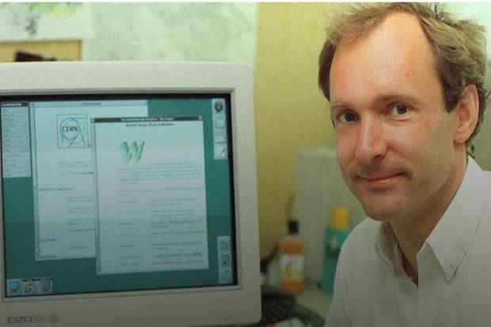

Biografi Tim Bernes Lee
Amri Nurfalah | 21 Mei 2021
Tim Bernes Lee (Bapak Internet)
Sir Timothy John "Tim" Berners-Lee, lahir di London, Inggris, 8 Juni 1955 adalah penemu World Wide Web dan ketua World Wide Web Consortium. Tim dilahirkan dan tumbuh di keluarga yang dekat dengan teknologi, Orang tuanya adalah ilmuwan komputer yang mengerjakan komputer pertama yang dibuat secara komersial, Ferranti Mark 1, komputer elektronik pertama di dunia. Dia menempuh pendidikan di Queen's College, Oxford jurusan Fisika, lulus di tahun 1976 dan mendapatkan gelar Bachelor of Arts Hons (I) Physics. Beberapa tahun setelah lulus, pada tahun 1920 dia bekerja di (CERN).
Internet merupakan jaringan komputer yang dibentuk oleh Departemen Pertahanan Amerika Serikat pada tahun 1969, melalui proyek lembaga ARPA yang dinamakan ARPANET (Advanced Research Project Agency Network). Tim Berners-Lee bekerja sebagai kontraktor independen di CERN dari Juni hingga Desember 1980. Dia mengusulkan proyek berdasarkan konsep hypertext , untuk memfasilitasi berbagi dan memperbarui informasi di antara para peneliti, bernama INQUIRE . Namun, proposal itu ditolak dan tidak pernah dipublikasi.
Setelah meninggalkan CERN di akhir tahun 1980 dia bekerja di John Poole’s Image Computer Systems Ltd, Dia menjalankan sisi teknis perusahaan selama tiga tahun. Proyek yang dia kerjakan adalah " panggilan prosedur jarak jauh real-time " yang memberinya pengalaman dalam jaringan komputer. Pada tahun 1984 dia kembali sebagai seorang rekan peneliti.
Pada Maret tahun 1989 Berners-Lee menulis proposalnya dan pada 1990, mendistribusikannya kembali. Proposal itu kemudian diterima oleh manajernya, Mike Sendall, yang menyebut proposalnya 'samar, tapi menarik'. Dia menggunakan ide yang mirip dengan ide yang mendasari sistem INQUIRE untuk membuat World Wide Web, Dia merancang dan membangun browser web pertama . Perangkat lunaknya juga berfungsi sebagai editor disebut WorldWideWeb , berjalan pada sistem operasi NeXTSTEP , dan server Web pertama, CERN HTTPd (Hypertext Transfer Protocol daemon ). Berners-Lee menerbitkan situs web pertama, yang menggambarkan proyek itu sendiri, pada tanggal 20 Desember 1990; itu tersedia untuk Internet dari jaringan CERN, info.cern.ch adalah alamat situs web dan server, tetapi belum banyak orang yang menggunakan media WWW yang ditemukannya, sampai pada tahun 1993 Marc Andressen meluncurkan browser yang lebih populer, Mosaic.
Pada tahun 1994, Berners-Lee mendirikan W3C di Massachusetts Institute of Technology . Ini Setelah merilis sumber kode Web ke publik, Tim menghabiskan sebagian besar hidupnya untuk menjaga dan mengawal pertumbuhan web, yakni dengan mendirikan World Wide Web Consortium (W3C) dan World Wide Web Foundation, terdiri dari berbagai perusahaan yang bersedia membuat standar dan rekomendasi untuk meningkatkan kualitas Web. Berners-Lee membuat idenya tersedia secara gratis, tanpa hak paten dan hak royalti. World Wide Web Consortium memutuskan bahwa standarnya harus didasarkan pada teknologi bebas royalti, sehingga dengan mudah dapat diadopsi oleh siapa saja.
Sebab, dia tahu kekuatan dari Web yang secara radikal dapat mengubah pemerintah, bisnis, masyarakat. Dia juga pernah membayangkan, WWW yang ia ciptakan bisa justru bisa menjadi penghancur dunia jika jatuh di tangan yang salah.
“Untuk orang yang ingin memastikan web melayani kemanusiaan, kita harus memperhatikan apa yang dibangun orang di atasnya,” kata Tim kepada Vanity Fair.
Oleh karena itu, Tim mendirikan W3C pada Oktober 1994. Konsorsium ini didirikan untuk mengembangkan teknologi (spesifikasi, pedoman, perangkat lunak, dan alat) untuk mengarahkan web ke potensi terbaiknya.
Tim juga mendirikan World Wide Web Foundation pada 2009. WWWF didirikan untuk memastikan bahwa web digunakan untuk kepentingan umat manusia dengan menetapkannya sebagai hak dasar dan barang publik global. Tim pun kerap mendorong keterbukaan data pemerintah secara global dan memperjuangkan hak-hak seperti netralitas jaringan, privasi, serta keterbukaan web.
Pada tahun 2004, Berners-Lee dianugerahi gelar kebangsawanan oleh Ratu Elizabeth II untuk rintisanya. Pada bulan April 2009, ia terpilih sebagai Foreign Associate of the National Academy . Ia masuk dalam daftar 100 Orang Paling Penting abad ke-20 versi majalah Time dan telah menerima sejumlah penghargaan lain atas penemuannya. Ia dihormati sebagai "Penemu World Wide Web" selama upacara pembukaan Olimpiade Musim Panas 2012 di mana ia tampil bekerja dengan NeXT Computer antik di Stadion Olimpiade London . Ia menerima Penghargaan Turing 2016 "karena menemukan World Wide Web, browser web pertama, dan protokol serta algoritme dasar yang memungkinkan Web untuk berkembang"